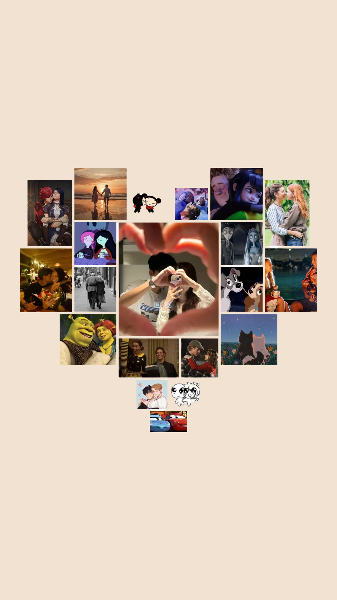

Dia dos Namorados
O Dia dos Namorados, é uma data especial dedicada à celebração do amor, do carinho e da parceria entre os casais. Mais do que a troca de presentes, esse momento representa uma oportunidade para demonstrar afeto, fortalecer os laços emocionais e valorizar a pessoa com quem compartilhamos a vida.
Em meio à correria do dia a dia, muitas vezes os compromissos profissionais, familiares e pessoais acabam ocupando grande parte do nosso tempo. Por isso, datas como o Dia dos Namorados são importantes para que os casais possam dedicar atenção um ao outro, relembrar momentos marcantes e criar novas memórias juntos. Pequenos gestos de carinho, palavras sinceras e momentos de qualidade podem fazer uma grande diferença na relação.
Celebrar essa data também contribui para manter o relacionamento ativo e saudável. Quando os parceiros reservam um momento para demonstrar amor e reconhecimento, fortalecem a confiança, a cumplicidade e o diálogo, elementos essenciais para a construção de uma relação duradoura. Além disso, essas demonstrações ajudam a evitar que a rotina torne o relacionamento automático, mantendo viva a conexão emocional entre o casal.
O Dia dos Namorados não deve ser visto apenas como uma tradição comercial, mas como uma oportunidade de reforçar sentimentos e valorizar a presença de quem está ao nosso lado. Afinal, relacionamentos precisam de cuidado constante, atenção e dedicação. Celebrar o amor é uma forma de lembrar que os pequenos gestos e os momentos compartilhados são fundamentais para manter a chama do relacionamento acesa ao longo do tempo.
Assim, o 12 de junho se torna uma data significativa não apenas para comemorar o amor, mas também para fortalecer os vínculos afetivos, renovar os sentimentos e incentivar os casais a cultivarem diariamente uma relação baseada no respeito, na amizade e no companheirismo.

O Que Fazer no Dia dos Namorados?
O Dia dos Namorados é a ocasião perfeita para sair da rotina e criar momentos inesquecíveis ao lado de quem você ama. E a boa notícia é que não é preciso gastar muito para tornar essa data especial. O mais importante é dedicar tempo, atenção e carinho à pessoa amada. Confira algumas ideias para aproveitar o Dia dos Namorados:
Prepare um jantar romântico
Cozinhar juntos ou surpreender seu amor com uma refeição especial pode transformar a noite em um momento único. Decore a mesa, coloque uma música agradável e aproveitem a companhia um do outro.
Faça uma noite de filmes
Escolham os filmes favoritos do casal, preparem pipoca e criem um clima aconchegante em casa. Vale até montar uma cabana na sala para deixar tudo mais divertido.
Façam um passeio diferente
Visitem um lugar que nunca conheceram, caminhem em um parque, assistam ao pôr do sol ou façam um passeio simples pela cidade. O importante é viver novas experiências juntos.
Revivam momentos especiais
Olhem fotos antigas, relembrem histórias engraçadas e conversem sobre tudo o que viveram até aqui. Relembrar a trajetória do relacionamento fortalece ainda mais a conexão do casal.
Troquem cartas ou mensagens
Escrevam tudo aquilo que muitas vezes fica guardado no coração. Palavras sinceras podem se tornar um dos presentes mais valiosos do dia.
Façam um café da manhã especial
Começar o dia juntos, sem pressa, com uma mesa preparada com carinho pode ser uma forma simples e muito significativa de celebrar.
Desliguem os celulares por algumas horas
Reservem um tempo apenas para vocês. Conversar, rir, brincar e aproveitar a companhia um do outro sem distrações pode ser um dos melhores presentes.
Planejem um sonho juntos
Que tal aproveitar a data para conversar sobre metas, viagens, projetos e sonhos? Construir planos fortalece o relacionamento e aproxima ainda mais o casal.
Façam algo que o outro gosta
Mesmo que não seja sua atividade favorita, demonstrar interesse pelo que faz o outro feliz é uma bela forma de demonstrar amor.
Simplesmente aproveitem a presença um do outro
No final das contas, o que torna o Dia dos Namorados especial não são os presentes ou os lugares caros, mas a oportunidade de celebrar o amor, a parceria e a história que vocês estão construindo juntos.
O amor se fortalece nos pequenos gestos, nos momentos compartilhados e na escolha diária de caminhar lado a lado. Feliz Dia dos Namorados!
Dicas de Presentes para o Dia dos Namorados
O Dia dos Namorados é uma oportunidade especial para demonstrar amor, carinho e gratidão pela pessoa que caminha ao seu lado. Mais do que o valor do presente, o que realmente importa é a intenção e o significado por trás da escolha. Por isso, separamos algumas ideias para ajudar você a surpreender quem ama.
Cartas e mensagens personalizadas
Em tempos de mensagens instantâneas, uma carta escrita à mão se torna algo raro e muito especial. Compartilhe lembranças, momentos marcantes e motivos pelos quais você ama essa pessoa.
Caixa de lembranças
Monte uma caixa com fotos, bilhetes, chocolates, pequenos presentes e objetos que representem momentos importantes da história de vocês.
Cesta personalizada
Crie uma cesta com os itens favoritos do seu namorado ou namorada: chocolates, café, snacks, livros, cosméticos ou qualquer coisa que tenha a ver com a personalidade dele(a).
Álbum de fotos
Reúna fotos especiais e crie um álbum contando a trajetória do relacionamento. É um presente simples, mas cheio de significado.
Jantar especial
Prepare uma refeição em casa ou reserve uma mesa em um restaurante que tenha significado para o casal. A experiência compartilhada muitas vezes vale mais do que qualquer presente material.
Acessórios e itens pessoais
Relógios, pulseiras, colares, carteiras, perfumes ou produtos de autocuidado costumam ser opções que unem utilidade e carinho.
Experiências inesquecíveis
Ingressos para shows, cinema, teatro, parques ou até uma viagem de final de semana podem criar memórias que ficarão para sempre.
Presente relacionado aos hobbies
Observe o que seu parceiro gosta de fazer. Livros, itens esportivos, materiais para artesanato, jogos ou acessórios para um hobby específico mostram atenção aos detalhes.
Vale-presente do amor
Crie cupons personalizados com experiências como: café da manhã na cama, massagem relaxante, noite de filme escolhida pelo parceiro ou um passeio especial.
O presente mais importante: seu tempo
Nenhum presente substitui a presença, a atenção e o cuidado. Às vezes, um dia dedicado exclusivamente à pessoa amada pode ser o maior presente de todos.
Lembre-se: o melhor presente é aquele que demonstra que você conhece, valoriza e se importa com quem está ao seu lado. Afinal, o amor se revela nos detalhes.